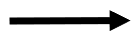
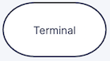
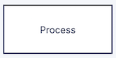
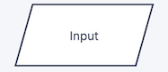
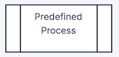

Sep 25, 2026 | 1666 words | 17 min read
9.1.1. PCMs: Logic and Modularity#
In Excel, you used logical functions to evaluate conditions and make decisions based
on whether those conditions were TRUE or FALSE. For example, the IF function
allowed you to return different results depending on whether a condition was satisfied.
Python programs use the same type of logical reasoning. Instead of using an Excel function, Python uses conditional statements to control which lines of code are executed.
In this module, you will use conditional statements to make decisions within a program and user-defined functions to organize code into reusable components.
Conditional Statements#
Conditional statements allow a program to make decisions about which code should be
executed based on whether a condition is True or False.
Relational (Comparison) Operators#
As you learned in Excel, relational operators are used to compare values and create
conditions. These conditions evaluate to either True or False.
Python uses many of the same relational operators as Excel, with a few differences.
Comparison |
Excel |
Python |
|---|---|---|
Less than |
|
|
Greater than |
|
|
Less than or equal to |
|
|
Greater than or equal to |
|
|
Equal to |
|
|
Not equal to |
|
|
In Excel, you used the IF function to specify what should happen when a condition
was TRUE and what should happen when it was FALSE.
For example: =IF(B2<30,"Freshman","Upperclassman")
Python uses an if statement to make the same type of decision. However, rather than
returning values within a formula, an if statement controls which lines of code are
executed.
if Statements#
An if statement executes a block of code only when a specified condition is True.
Consider a program that monitors the temperature of a device. A warning should be displayed when the temperature exceeds 30 °C.
temperature = 35
if temperature > 30:
print("Warning: High temperature")
The condition temperature > 30 evaluates to True, so the indented print() statement is executed.
If temperature were less than or equal to 30, the condition would evaluate to
False and the indented statement would be skipped.
Python Syntax
An if statement ends with a colon (:). The statements controlled by (following) the if
statement must be indented. Indentation is part of Python syntax and identifies which statements belong to the
conditional structure.
if-else Statements#
An if-else statement provides two possible paths through a program:
the
ifblock is executed when the condition isTrueotherwise, the
elseblock is executed
This is similar to the Excel IF function, which you previously used in the form:
=IF(logical_test, value_if_true, value_if_false)
In Python, the same decision-making structure can be written as:
temperature = 25
if temperature > 30:
print("Warning: High temperature")
else:
print("Temperature is within the acceptable range")
Only one of the two indented blocks will execute.
if-elif-else Statements#
Some decisions require more than two possible outcomes. The elif keyword, short for
“else if,” allows additional conditions to be evaluated.
Python evaluates the conditions from top to bottom. Once a condition evaluates to
True, its corresponding block is executed and the remaining conditions are skipped.
temperature = 27
if temperature > 30:
print("Warning: High temperature")
elif temperature >= 20:
print("Temperature is within the acceptable range")
else:
print("Warning: Low temperature")
Value of |
Output |
|---|---|
|
|
|
|
|
|
Check for Understanding
If temperature = 30, which message will be displayed by the program above?
Show Answer
Temperature is within the acceptable range
Because 30 > 30 is False, so Python moves to the elif. Then 30 >= 20 is True.
Combining Conditions#
As you learned in Excel, more than one condition can be combined when making a
decision. Python uses the logical operators and, or, and not.
Operator |
Result is |
|---|---|
|
Both conditions are |
|
At least one condition is |
|
The condition is |
For example, suppose a device operates normally when its temperature is between 20 °C and 30 °C.
if temperature >= 20 and temperature <= 30:
print("Temperature is within the acceptable range")
Nested if Statements#
An if statement can be placed inside another if statement. This is called a
nested if statement.
Nested if statements are useful when a second condition should only be evaluated
after the first condition is satisfied.
For example, suppose a device should first be checked for a high temperature. If the temperature is high, the humidity is then checked to determine which warning should be displayed.
temperature = 35
humidity = 60
if temperature > 30:
if humidity > 50:
print("Warning: High temperature and humidity")
else:
print("Warning: High temperature")
else:
print("Temperature is within the acceptable range")
Check for Understanding
If temperature = 28 and humidity = 65, what will be displayed when the code is executed?
Show Answer
Temperature is within the acceptable range
The condition temperature > 30 evaluates to False, so the code within the first
if block is skipped. Therefore, humidity > 50 is never evaluated, even though
that condition would be True.
User-Defined Functions#
As programs become more complex, organizing code into smaller, reusable components makes programs easier to develop, test, and maintain. This approach is called modularity.
In Python, one way to create modular programs is by using functions. A function is a reusable block of code designed to perform a specific task.
Python includes many built-in functions that you have already used, such as
print(), input(), and round(). A user-defined function (UDF) is a function
created by the programmer to perform a specific task.
You have already used a user-defined function in the Python template:
def main():
# Program code
if __name__ == "__main__":
main()
In this section, you will learn how to create additional user-defined functions and use them to organize your programs.
Defining and Calling a Function#
A user-defined function is created using the def keyword. The function name should describe the task performed by the function and follows the same naming rules as a variable. The general structure of a function definition is:
def function_name():
# Statements performed by the function go here
Defining a function does not execute the statements inside the function. The function must be called when you want those statements to execute.
For example:
# Function definition - establishes what a function does.
def display_warning():
print("Warning: High temperature")
# Function call - executes the code defined within the function.
display_warning()
When Python reaches display_warning(), execution moves to the function. After the statements in the function have executed, the program continues with the statement following the function call.
Component |
Example |
Purpose |
|---|---|---|
Keyword |
|
Indicates that a function is being defined |
Function name |
|
Identifies the function |
Parentheses |
|
Contain any parameters required by the function |
Colon |
|
Indicates the beginning of the function body |
Function body |
indented statements |
Contains the code executed when the function is called |
Function call |
|
Executes the function |
Parameters and Arguments#
Functions become more useful when they can perform the same task using different values. Values can be passed into a function when the function is called.
A parameter is a variable listed in the function definition that represents a value the function needs to perform its task.
An argument is the value provided to a parameter when the function is called.
For example, the display_warning() function can be modified to accept a temperature:
def display_warning(temperature): # Function definition
if temperature > 30:
print("Warning: High temperature")
else:
print("Temperature is within the acceptable range")
display_warning(35) # Function call
In the function definition, temperature is a parameter. It represents the value that the function will use when it executes. In the function call, 35 is an argument. When the function is called, the argument 35 is assigned to the parameter temperature.
Therefore, the function call display_warning(35) causes the function to execute as though temperature = 35.
A function can have multiple parameters. When arguments are provided based on their position in the function call, they are called positional arguments.
def display_warning(temperature, humidity):
if temperature > 30 and humidity > 50:
print("Warning: High temperature and humidity")
elif temperature > 30:
print("Warning: High temperature")
else:
print("Temperature is within the acceptable range")
display_warning(35, 60)
In this example, 35 is assigned to temperature and 60 is assigned to humidity.
Because positional arguments are matched to parameters by their position, the order of the arguments matters.
Returning Values#
A function can perform a calculation and send the result back to the location where
the function was called. The return statement is used to send a value back from a
function.
For example, a function can convert a temperature from degrees Celsius to degrees Fahrenheit:
def convert_temperature(celsius):
fahrenheit = (celsius * 9 / 5) + 32
return fahrenheit
When the function is called, the returned value can be assigned to a variable:
temperature_f = convert_temperature(25)
The argument 25 is assigned to the parameter celsius. The function calculates fahrenheit, and return fahrenheit sends the calculated value back to the function call. The returned value is then assigned to temperature_f.
A function can also use multiple parameters:
def calculate_force(mass, acceleration):
force = mass * acceleration
return force
applied_force = calculate_force(10, 2.5)
Here, the arguments 10 and 2.5 are passed to the parameters mass and acceleration, respectively. The calculated value is returned and assigned to applied_force.
Variable Scope#
The scope of a variable describes where that variable can be accessed within a program. When working with functions, variables may have local or global scope.
Local Variables#
A variable created inside a function is a local variable. A local variable can only be accessed within the function where it is created.
def convert_distance(miles):
kilometers = miles * 1.609
print(kilometers)
convert_distance(5)
In this example, miles and kilometers are local to convert_distance(). They can be used while the function is executing but cannot be accessed outside of the function.
For example, the following code would result in an error:
def convert_distance(miles):
kilometers = miles * 1.609
convert_distance(5)
print(kilometers)
The variable kilometers only exists within convert_distance(), so it is not available when print(kilometers) is executed outside of the function.
To use a value calculated inside a function elsewhere in the program, return the value from the function:
def convert_distance(miles):
kilometers = miles * 1.609
return kilometers
distance_km = convert_distance(5)
print(distance_km)
Global Variables#
A variable created outside of a function is a global variable. Global variables can be accessed from different parts of a program, including inside functions.
SECONDS_PER_MINUTE = 60
def convert_to_seconds(minutes):
seconds = minutes * SECONDS_PER_MINUTE
return seconds
total_seconds = convert_to_seconds(5)
In this example, SECONDS_PER_MINUTE is a global variable because it is defined outside of the function. The function can access its value when calculating seconds.
Global variables should generally be avoided when their values may change during a program. Instead, use parameters and return values to pass information between functions. This makes functions easier to understand, test, and reuse.
Known constants, or values that should not change while a program is running, may be defined globally. By convention, constant names are written using uppercase letters.
Flowcharts for Coding#
A flowchart is a visual representation of the steps and decisions in a program. Flowcharts can be used to plan the logic of a program before writing the corresponding Python code.
Flowcharts are useful for:
Organizing the steps needed to solve a problem
Identifying decisions that require conditional statements
Showing how data moves through a program
Planning how a program can be divided into user-defined functions
Communicating program logic with others
A flowchart uses standardized shapes to represent different types of operations. The arrows connecting the shapes indicate the order in which those operations occur.
Flowchart Shapes#
Shape |
Name |
Purpose |
|---|---|---|
 |
Flowline |
Shows the direction of program flow |
 |
Terminator |
Indicates the start or end of a program or function |
 |
Process |
Represents an operation or calculation performed by the program |
Decision |
Represents a condition that determines which path the program follows |
|
 |
Input/Output |
Represents data entering the program or information being displayed |
 |
Predefined Process |
Represents a call to a function that is defined elsewhere |
{kind=link}
{kind=link}
{kind=link}
{kind=link}
{kind=link}
{kind=link}
Flowchart Example#
Consider a program that asks the user for a temperature in degrees Celsius, converts the temperature to degrees Fahrenheit using a user-defined function, and displays the result.
The flowchart below shows how the coordinating function and the user-defined function work together.
flowchart TD
A([Start main]) --> B[/Input temperature in °C/]
B --> C[[Call convert_temperature]]
C --> D[/Display temperature in °F/]
D --> E([End main])
F([Start convert_temperature]) --> G[Calculate temperature in °F]
G --> H[/Return temperature in °F/]
H --> I([End convert_temperature])
The coordinating function controls the overall flow of the program. It collects the input, calls convert_temperature(), and displays the result. The convert_temperature() function performs a specific task and returns the calculated value to the coordinating function.
Breaking a program into functions in this way makes each part of the program responsible for a specific task.
Check for Understanding
In the flowchart above, which function is responsible for displaying the final result?
Show Answer
The coordinating function (main()) displays the final result. The convert_temperature() function performs the calculation and returns the value.